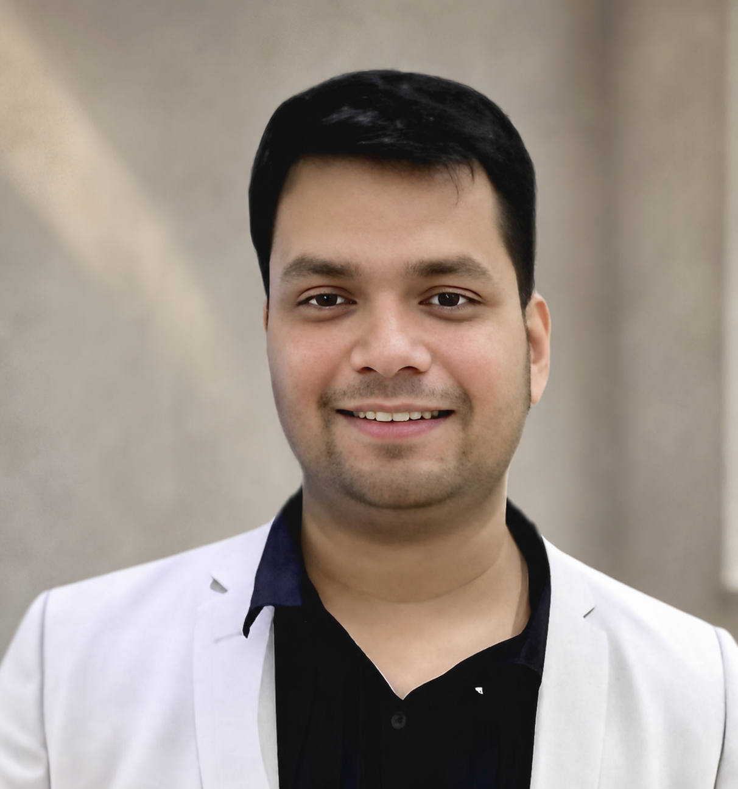

Indian Institute of Technology Bombay, Mumbai, India

I am an observational astronomer studying the light of the universe's most violent explosions: gamma-ray burst afterglows, kilonovae, and the electromagnetic counterparts of gravitational-wave sources. My work runs from photons to physics — operating the GROWTH-India Telescope at Hanle for rapid follow-up, building the image-subtraction and machine-learning software that separates real transients from artifacts, and modeling both the prompt gamma-ray emission and the afterglows of GRBs to measure the structure and viewing geometry of relativistic jets.
I work with Prof. Varun Bhalerao at IIT Bombay and collaborators at the Indian Institute of Astrophysics, and I am an active member of the GROWTH-India, ZTF, GROWTH-MMA, and LSST-FAST collaborations. My thesis, Study of Electromagnetic Emission from Compact Objects, is defended in January 2027; I am applying for postdoctoral positions beginning that year.
Along the way I have led GIT's gravitational-wave follow-up operations and supervised more than twenty students on observing, pipeline, and modeling projects. The full record is in my CV.
Keywords: GRB afterglows structured jets off-axis geometry prompt emission GRB populations GW counterparts kilonovae orphan afterglows time-domain surveys rapid follow-up robotic telescopes Bayesian inference ML transient detection
The question behind my thesis is geometric: gamma-ray burst jets are not uniform cones but structured outflows, and what we observe depends as much on where we stand as on what exploded. In GRB 250704B we showed that a short burst's long-lived afterglow plateau is naturally explained by a narrow jet viewed from outside its core — the same configuration as GW170817, seen at cosmological distance. At the opposite extreme, GRB 230204B, which our telescope discovered, is an on-axis view of one of the most energetic bursts known — an event I characterized end to end, from its prompt gamma-ray emission through the multiwavelength afterglow to its Wolf–Rayet progenitor wind.
Single events are anecdotes; my current work turns them into a population: a homogeneously modeled catalog of GIT-observed afterglows in which every fit carries quantified cross-code systematic uncertainties — jet energetics, opening and viewing angles, and the dark-burst fraction of a sample selected by SVOM, Einstein Probe, and MAXI rather than Swift. The same inference machinery, unchanged, is the interpretation tool for the next gravitational-wave counterpart; the same detection pipeline is built to find it.
22 refereed publications (2 first-author, including one in Nature); h-index 10. Full record on ADS.
First author
Selected co-author
Plus 13 further refereed publications on supernovae, novae, solar-system objects, and exoplanet ephemerides.
| Facility | Role and use |
|---|---|
| GROWTH-India 0.7 m Hanle, Ladakh |
Core team for operations and transient follow-up since 2021: robotic operations, ToO scheduling, and sustained GRB and Einstein Probe response. Discovered the optical afterglows of GRB 230204B and GRB 251126A, the latter within four minutes of trigger (best automated response: 39 s). Two-week on-site training at the observatory in 2021, working with the hardware alongside the engineering team. |
| LVK O4 follow-up team leader, 2023–25 |
Led GIT's gravitational-wave follow-up operations and built the end-to-end response system; triggered observations for S230615az, S231113bw, and S241125n. |
| Himalayan Chandra 2 m IAO Hanle |
Optical and NIR follow-up of GW counterpart candidates and GRB afterglows. PI or Co-I on 21 accepted proposals covering GRBs, Einstein Probe transients, and gravitational-wave counterparts, including the LIGO IR1 cycle. |
| ZTF / P48 Palomar |
Duty astronomer for ZTFReST and GROWTH-MMA: discovered the orphan afterglow AT 2023lcr, plus ZTF23aaxzvrr and ZTF23abbfrqp; 18 TNS discovery reports. ZTF and DECam scanning for gravitational-wave and short-GRB counterparts; near-Earth object searches with ZStreaks (2021–24). |
| Space missions Swift · Fermi · EP · Chandra |
Prompt-emission and afterglow data analysis; DDT programs on Chandra (GRB 230812B, GRB 250704B) and GMRT (GRB 260516D); further ToO triggering on SEDM and NGPS. |
| Area | Systems built and tools used |
|---|---|
| Afterglow modeling | End-to-end analysis pipeline: ingestion, extinction correction, empirical fitting, physical modeling by nested sampling with evidence/BIC comparison, cross-code systematics validation, degeneracy and parameter-correlation analysis, and population statistics. afterglowpy · jetsimpy · redback · VegasAfterglow |
| Prompt emission | Time-integrated and time-resolved spectral analysis; energetics and initial Lorentz-factor constraints from the afterglow onset. Fermi-GBM · Swift-XRT · 3ML · GDT |
| Transient detection | GIT detection system: source-injection training sets, image subtraction, statistically validated analytic vetting, ML real/bogus classification, and a human-scanning interface. PyTorch · scikit-learn |
| Survey pipelines | Rebuilt the automated nightly pipeline: reduction, recovery from failed astrometry, saturation and bad-pixel masking, PSF photometry on weight maps, subtraction, median and RMS-weighted stacking, and a nightly light-curve interface. Astropy · Photutils · SExtractor · PSFEx · SCAMP · SWarp |
| Observatory systems | Fully automated LVK follow-up chain — alert and skymap ingestion, tiling, scheduling, triggering, reduction, scanning, GCN publication — plus GIT ToO scheduling, filter-wheel error handling, weather alerts, and multi-institute data synchronization. |
| Inference & computing | emcee · PyMultiNest · UltraNest · nautilus · Python · Linux · Git · SQL · LaTeX |